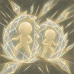
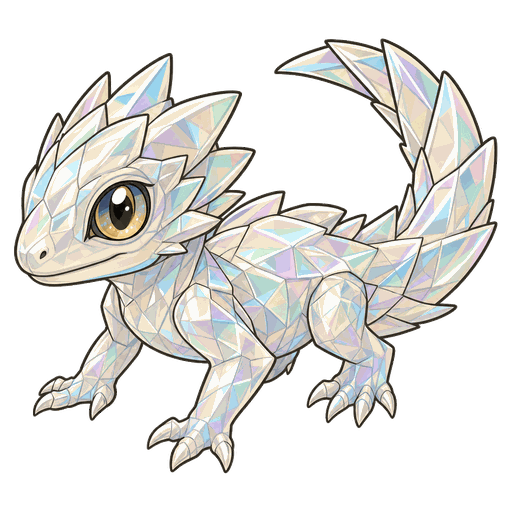
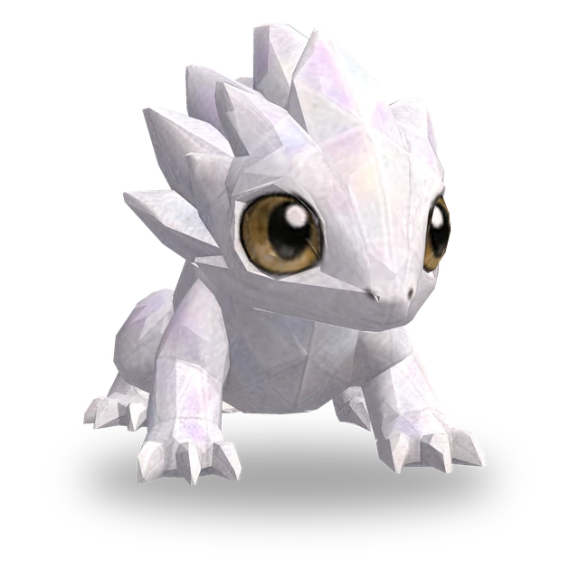
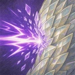

Scheggia di Cristallo
Conferisce a sé e agli alleati entro 1 casella uno scudo pari a 250% del potere abilità per 4 s. Quando uno scudo termina, infligge ai nemici entro 1 casella da chi lo portava danni magici pari allo scudo rimasto.

3D
| Lv. | Salute | Attacco | Potere abilità |
|---|---|---|---|
| 1 | 330 | 16 | 16 |
| 2 | 379 | 18 | 18 |
| 3 | 436 | 21 | 21 |
| 4 | 502 | 24 | 24 |
| 5 | 577 | 28 | 28 |
| 6 | 664 | 32 | 32 |
| 7 | 763 | 37 | 37 |
| 8 | 878 | 43 | 43 |
| 9 | 1009 | 49 | 49 |
| 10 | 1161 | 56 | 56 |
| 11 | 1335 | 65 | 65 |
Salute, attacco e potere abilità aumentano del 15% a ogni livello (fino al Lv.11).
No.067
Conferisce uno scudo a sé e agli alleati vicini, e quando uno scudo finisce ciò che ne resta esplode sui nemici intorno; non subisce danni magici.

Conferisce a sé e agli alleati entro 1 casella uno scudo pari a 250% del potere abilità per 4 s. Quando uno scudo termina, infligge ai nemici entro 1 casella da chi lo portava danni magici pari allo scudo rimasto.
